生成时间：2026-11-08T11:53:06+08:00
今日保留论文数：14
内容构成：今日新文 14 篇；补充推荐 1 篇；经典旧文精读 0 篇
阅读分层：重点精读 2 篇；相关简报 13 篇。精读依据科学贡献筛选，简报保留方法、结论及局限。
补充推荐论文数：1
数据源警告
- 本次有 1 个数据源访问异常；完整错误已保留在运行日志中，日报只显示摘要。
- 其他来源：1 个异常。
- 主要错误类型：其他 1 次。
高能天体物理重点
1. Hidden Neutrino Active Galaxy Candidates: Prospects for Catalog and Stacking Searches with IceCube, IceCube-Gen2, and KM3NeT
- 来源：arXiv / astro-ph.HE
- 链接：https://arxiv.org/abs/2611.00198
- 作者：Mainak Mukhopadhyay, Jose Alonso Carpio, Heer Patel, Ali Kheirandish, Kohta Murase
- 公告 / 来源日期：2026-11-03
- 阅读层级：重点精读
- 评分：novelty 8/10，importance 8/10，relevance 10/10，final 9.70/10
- 推荐理由：28个内禀硬X选AGN及统一谱参数可直接构建中微子堆叠；探测前景仍是冕模型条件。
中文题目：从内禀硬X射线选隐蔽中微子源：28个活动星系核的堆叠靶标
做了什么：活动星系核可在黑洞附近的磁化热冕加速质子并产生中微子，但周围气体会吸收或重处理X射线，直接用观测流量会错排被遮挡的源。作者将Swift/BAT巡天、BASS光谱巡天和针对厚吸收核的NuSTAR宽带分析交叉匹配，把各文献数据转换到统一的内禀2–10和2–195 keV能段；经过流量截断和喷流、双核、光谱异常等排除，得到28个X-HiNAC靶标。目录还记录柱密度、谱指数、距离和超大质量黑洞质量。它是可供多种近似中微子流量随内禀X射线流量变化的模型使用的观测样本，不是一批中微子检测。
作者再用三个磁冕基准模型计算中微子谱，经IceCube-Gen2和KM3NeT的能量与方向响应转换为预期事件。NGC 1068偏向前者，Circinus在有利模型下偏向后者；去掉已显著的NGC 1068后，模型A/C的合并信号可在约5–10年达到名义5σ，模型B可长得多。数值来自单能区泊松计数的模拟前景，未用真实逐事件重建能量与角概率，亦未完成背景标定。黑洞质量、厚吸收修正和冕半径可令排序、谱峰与发现时间明显移动。
为什么重要：真正的进展是把“源的物理亮度排序”和“某一探测器的有效可测性”拆成两步。单个Seyfert的候选超额容易被少量事件、分析能段及假设谱形驱动；可复用的吸收修正目录则允许多探测器预注册候选与权重。图7不依赖NGC 1068的堆叠试验说明有机会检验一个群体，但不同冕模型的差别也同样表明目前不能把X射线亮度当中微子探测保证。
理论 / 观测 / 仪器方法价值：可复用的数据链为巡天源表匹配、低能与硬X射线谱的统一、厚吸收对象的辐射传输修正、距离与质量的同口径处理，然后将中微子模型通过仪器有效面积和可见时间折叠。表1保留两个能段的排名而不是强行取一个。方法特别适合做权重敏感性：替换独立NuSTAR光谱，传播厚吸收、黑洞质量及模型散布，观察候选排名及联合似然是否改变。
为什么应该关注：对IceCube/KM3NeT联合分析和LACT甚高能约束，这一批靶标能把“伽马弱、中微子强”的物理测试变成可执行的名单。先固定候选与正、负对照，比较内禀X射线加权和逐源冕谱加权；再将未检出的TeV流量和低能级联纳入一致能量预算。不能用同一中微子事件既选择目标又独立验证模型，亦不能把亮源样本的1–3%弥散份额外推为所有AGN占比。
展开详细解读：文章讲解、背景、理论、重点章节、图表与相关工作
文章详细讲解
科学问题不是再寻找一个任意方向的单事件关联，而是能否用独立的电磁数据系统地规定适合中微子统计检验的AGN样本。冕中有高能质子和密集靶场时，中微子容易逃出，而同源伽马射线可被吸收；同时外侧环形遮挡又让X射线亮度难以直接读取。若用软X射线的观测流量排序，最遮挡的源可能反而被漏掉。
作者将70月BASS作为起点，排除105个耀变体，将733个非耀变体与157月BAT的1066个AGN交叉匹配，重叠717个。再引入75个高遮挡BASS的环面拟合和52个候选康普顿厚源的NuSTAR/XClumpy结果。统一数据后以1083源为起点，宽带内禀流量门槛先留下39源，逐个排除明显喷流、双活跃核、混淆/异常谱和更新后跌破门槛的对象，最终表1为28源。
数值前景不是从目录直接读出：每个源的内禀2–10 keV光度、谱指数和质量先输入AMES磁冕模型得到全味谱，再按味比例、赤纬、有效面积和可见性积分成事件数。A偏向延伸至更高能，C在约1–30 TeV较强但截断低，B通常较弱。不同纬度的仪器对相同源并不等敏感，南天Circinus与北天NGC 1068因而是互补候选。
主要局限是目录与预测各有自己的选择函数。目录不是体积完备样本，先验上排除了强喷流与双核；高遮挡的内禀光度依赖环面几何，黑洞质量可以随测量法差数倍至近一个数量级。预测只展示三个固定冕配置，未给每个源拟合冕参数；堆叠用单区间计数，未做能量、角度或实际数据的试验标定。下一步应把这些不确定性放入逐源联合似然，而不是用图7给固定发现日期。
关键结果是怎么做出来的
第一步对齐观测源表，而不是直接混合不同能段的排名。BAT用于长期14–195 keV观测，软X及NuSTAR则补足谱指数、吸收与截断；对于康普顿薄源，可近似用硬X观测流量作为内禀值，对于厚源须优先采用考虑散射和反射的环面模型。交叉匹配的717源采用较新的BAT硬X值而保留BASS其他参数，避免重复计数。
第二步做谱形统一及阈值筛选。若两能段均有测量，分别由通量反求截断幂律归一化，要求在约3.16倍内，再取平均转换到2–10和2–195 keV。宽带阈值$10^{-7}$ GeV cm$^{-2}$ s$^{-1}$用于限制靶标数，不是中微子发现阈值本身。样本由39减至28，其中NGC 4388的NuSTAR重估使其低于阈值，展示了选择会随吸收模型与观测历元改变。
第三步核对目录系统误差。图表须把亮度排名与等分级分开看：28个源中23个两能段分级相同，但NGC 4945从软带第III级升至宽带第II级。部分独立NuSTAR内禀流量仅在2–3倍内一致，NGC 3281差约6倍；NGC 7172不同黑洞质量估计跨近一数量级。表中采用值是可追踪基准，不是把文献差异平均成精确已知的物理参数。
第四步把模型曲率传到探测器。作者选三个湍流和冕半径配置，不把简单幂律强加在所有源上。图2中的九个示例说明谱峰、截止和总幅度都随源及模型变。图3–6的直方图为真实中微子能量和预期年率，不能把PeV端窄峰直接当可重建μ子能谱；在南天有效面积和KM3NeT地平线下比例尤其重要。
第五步才计算计数显著性。假设10年，NGC 1068在Gen2模型A约7σ、模型B约3.7σ；Circinus在KM3NeT模型C约6.7σ。图7排除NGC 1068后，A/C名义5σ约5–10年而B更慢。只使用恒定角窗与简化背景的期望泊松计数，未给每个目标的实际发现p值，低计数区的近似更须校准。
最后用图8把定向发现与全天总量分开。在约10 TeV，28源估计贡献全天平均能谱强度约1–3%，合计约(1–3)×10^-9 GeV cm^-2 s^-1 sr^-1。局部搜索仍可能先显著，因为背景只在有限角窗内计入。该样本按近处内禀流量截断且排除喷流，不等同整个人口积分，低百分比不否定遥远AGN可贡献更多。
展开背景、理论、公式、模型和章节导读
背景知识
Seyfert类活动星系核由中心超大质量黑洞吸积供能，X射线常来自热电子把软光子康普顿升能。磁湍流和重联还可能给少量质子非热能量，随后与气体或光子作用产生介子，衰变产生中微子。相同加速功率可有不同介子效率，X射线与中微子成比例只能作为样本构建的工作假设。
厚吸收既削弱软X射线，也改变硬X谱形。氢等效柱密度接近$10^{24}$ cm^-2时，康普顿散射、反射和荧光线都不可忽略。被观测到的光度与源本征流量不同，特别是只看到重处理的侧向成分时。因此一条简单吸收幂律不能替代NuSTAR覆盖下的环面几何模型。
中微子探测把概率问题从光度转到事件。一个同样亮的源，若所在方向有大量大气缪子，或在另一探测器只有少量时间位于地平线下，最终有效面积就不同。轨迹比级联通常定位更窄，能压低大气背景；级联可补其他方向和味，但不能直接拿事件数与轨迹混在一个计数显著性中。
已知NGC 1068的超额提供冕模型检查点，但用该源拟合后再把其贡献放进堆叠，容易把单源重现误读成群体独立证据。图7特意排除它，问的是剩余候选是否仍可能形成集体信号。即使预期回答为是，也需要按预先固定权重、在真实背景下验证。
基础理论 / 方法脉络
内禀X射线谱用光子指数和指数截断近似。把能量乘到光子流量上得到每单位能量的能量流量密度，再在目标带积分，能把一个窄带量换算到另一带。若该源谱发生变化，单一谱形不再能同时代表不同历元，归一化一致性检验只能剔除最明显的冲突。
磁冕模型近量热时，中微子总能量与注入宇宙线功率近相关，但气体、辐射和逃逸都会改变谱。爱丁顿比给吸积状态尺度：相同X射线光度而黑洞质量更大时，爱丁顿比更低，本文基准模型还会改变冕半径，从而改变靶场及加速/冷却条件。这是质量不确定性进入预测的具体通路。
三个模型不是对同一数据得到的统计置信区间。A/B的湍流谱指数均为5/3，湍流效率参数分别10和20；C取指数2、效率参数15和较强磁场。A/B采用随爱丁顿比分段的冕半径，C固定10个Schwarzschild半径。改变这些参数会移动谱峰与截断，对探测面积高能增大的仪器不只是统一缩放信号。
方向和能量共同进入事件响应。不同味通过传播近似混合，本文对轨迹以全味谱的三分之一作为μ味；把流量与随能量、赤纬和选择变化的面积积分，并乘运行时间才得事件。真能量分布没有卷积μ子重建误差，单区间计数虽然避免假造分辨率，也丢掉了本可用于抑制软大气背景的谱信息。
泊松显著性比较只有背景与含正信号两个计数模型。用预期信号加背景的中位计数，只给代表性实验的预期结果。堆叠中各源计数相加是便于预报的近似；真实分析要处理角窗重叠、背景空间不均匀、系统学、能谱权重和多种模板的试验因子。
公式与推导
以下九步使用论文式(1)–(10)的主要关系，并明确标出事件窗的教学展开。
原文式(1)把近量热冕的中微子光度写成标度：
$L_X,L_\nu$为指定能段光度（erg s^-1），幂律只描述趋势，归一化带有相应单位且依赖中微子能段和模型。接近1时，近邻源的内禀X射线流量可先用作定向样本权重。
用原文式(3)和式(4)表示从光子谱到通量：
$E$以keV计，$\Gamma_X$无量纲，若$\phi_X$为光子通量密度则积分按能量单位转为erg cm^-2 s^-1。无测得截断时并非拟合出无限大，而是对指定带忽略指数项。
对不同能带独立反求原文式(5)的归一化：
两归一化同单位，条件对应比值约3.16以内；取平均后积分到统一带。这是异质观测一致性筛选，不是等同统计误差界。
当文献直接给光度，用原文式(6)转换：
$d_L$换成cm，$z$无量纲，末项是作者采用的幂律K修正。邻近对象在冕计算近似用$L_X=4\pi d_L^2F_X$；不要把目录转换和模型入口的近似混成一个精密红移校正。
原文式(7)定义目标宽带门槛：
右端是单位换算，不是探测到的中微子通量。后续剔除对象不全是低于阈值，也包括不符合单核非喷流框架者。
以式(2)把黑洞质量带入冕状态：
$L_{\rm bol}$与$L_{\rm Edd}$同为光度，$\sigma_T$为Thomson截面，$R_{\rm S}$是长度；$R_c/ R_{\rm S}$给模型冕半径。固定光度时质量差十倍可令爱丁顿比差十倍，甚至越过0.3分界，不能只传播单一质量统计误差。
原文式(8)折叠中微子谱和仪器：
$A_{\rm eff}$以cm²计，微分通量以GeV^-1 cm^-2 s^-1计，时间以秒计，得无量纲事件数。KM3NeT再按地平线下时间权重，Gen2示例把IceCube面积按$10^{2/3}$放大，不是实测响应。
教学性展开作者的角窗背景（§IV.2–IV.3）：
小角度$\sigma_{\rm ang}$用弧度，固体角以sr计，$I_{\rm atm}$为每sr强度。作者近似用0.4度角尺度及72%信号包含率。背景的角窗约束解释定向搜索何以对全天份额小的群体也可能敏感。
原文式(9)–(10)的正信号分支为
$N_{D,j}$是期望$S_j+B_j$的泊松中位数，不是观察事件；信号先计角窗包含率。堆叠以总信号/背景重新取中位数并换算名义单侧显著性。此渐近关系不能代替低计数实际背景试验，且不能把图7当全局发现检验。
模型拟合 / 应用方法
样本表的每条输入有优先级：BAT宽带提供巡天基线，BASS提供内禀谱和吸收，NuSTAR厚源拟合优先解决被遮挡的谱形。两能段归一化必须大致相符，却未强制不同仪器同一历元。尤其NGC 1068的暂时透见与环面几何会改变估计光度；把灰带只看作X射线输入传播，不当作包含全部冕和距离系统误差。
黑洞质量来自动力学、脉泽、混响或经验关系，部分随采用距离重标。单次谱线推质量的经验散布与测量误差不同。NGC 4151的不同混响结果约1.66和3.5千万太阳质量，NGC 7172的不同方法约一千万至一亿太阳质量。应对比整套可接受估计，而非用最小误差值固定所有模型。
AMES阶段采用三个预定湍流模型及分段半径，并未逐源拟合或估计群体散布。NGC 1068和已观测IceCube谱做相容检查，但IceCube的盘冕模板使用另一组输入；不能拿两者形状近似重叠说三个模型已由数据验证。预测NGC 4151的模型A偏向200–300 TeV谱峰，也不直接复现低能幂律超额。
响应阶段Gen2使用PSTracks和ESTES的方向分段面积作尺度外推；KM3NeT按可见因子并采用其公布面积，1 TeV以下无对应表值。传统大气中微子背景在角窗折叠，轨迹分布以真能量展示，级联率仅作参考。小角窗、面积缩放及源谱的联合变化，比单一全谱总流量更直接控制预期显著性。
统计阶段把100 GeV–10 PeV并入一个计数区间，对已知信号和背景作中位泊松预报，低统计区须另做精确检验。真实联合似然应显式纳入角距、重建能量、分辨率、探测器年份、背景角向变化和源相关权重，再以背景试验校准。本文没有这一步，故不同模型年份间隔是科学设计依据，不是观察排期承诺。
重点章节 / 结果段落怎么读
-
§II及§III.1–5：先读近量热动机和两通带的统一，理解为何不直接用观测软X排名；注意阈值与中微子灵敏度不是等号。
-
§III.6–9和表1：核查质量来源、光度模型、排除条件及两套分级；特别看NGC 3281和NGC 4388的不同NuSTAR处理。
-
§IV.1–2和图1–6：先分辨全味能谱与μ味事件率，再比较模型曲率、地平线可见性与真能量限制。
-
§IV.3及图7：逐项核对角窗、背景、单区间与排除NGC 1068的条件，识别名义预期和实测发现的区别。
-
§V图8：把选亮源的全天贡献与更遥远完整AGN人口区别，考虑后续联合谱/背景标定的必要性。
关键图表与解读
图1：NGC 1068中微子谱的模型与观测比较
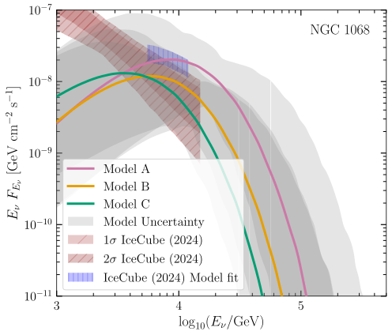
图注：NGC 1068的全味中微子通量：三个磁冕模型A、B和C的预测与IceCube结果比较。灰色区域为内禀X射线光度不确定度的传播；深、浅棕色斜线分别为IceCube幂律拟合的1σ和2σ区域，蓝色斜线为IceCube盘冕模板拟合不确定度。 来源：arXiv:2611.00198论文原图。
怎么看这张图：先分开X射线输入误差的灰带与IceCube拟合的斜线带；多模型相容并不唯一确定冕。 将源目录物理假设与已有独立中微子观测对应。
来源与置信度：arXiv HTML；source verified；https://arxiv.org/html/2611.00198v1/ngc1068_spectra.svg
图2：九个样本源的预期全味中微子谱
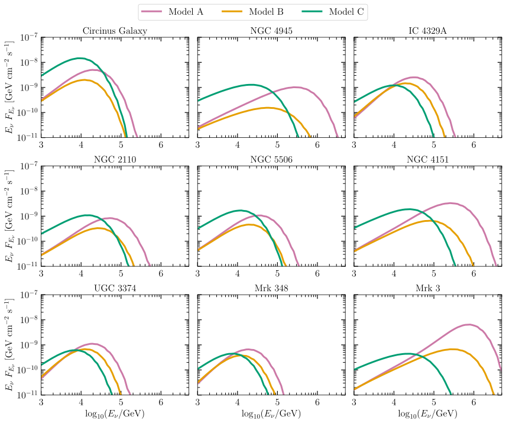
图注：表1中的九个X-HiNAC源的全味中微子能量通量，包括南北天各四个高排名源和一个地平线区域源。紫、橙、绿分别为模型A、B、C。A/B在爱丁顿比至少0.3时取冕半径3个Schwarzschild半径，低于0.3时取10；C始终取10。 来源：arXiv:2611.00198论文原图。
怎么看这张图：比较低能幅度和最高能的截止，不要从全味谱直接读μ味事件数。 显示三个冕模型的谱形差别及南北候选互补。
来源与置信度：arXiv HTML；source verified；https://arxiv.org/html/2611.00198v1/spectra.svg
图7：排除NGC 1068后的条件堆叠前景
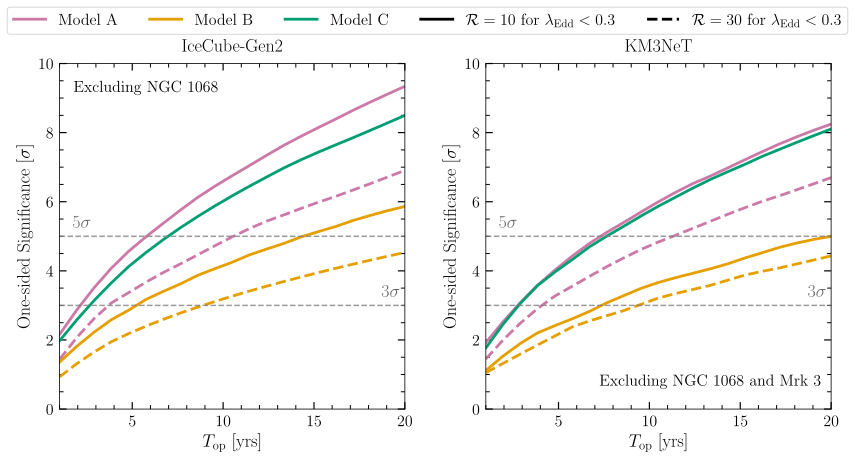
图注：X-HiNAC样本排除NGC 1068后，合并中微子信号的预期单侧统计显著性随运行时间变化。左为IceCube-Gen2，右为KM3NeT；低于爱丁顿比0.3的源，实线取无量纲冕半径10，虚线取30；模型C只采用10。 来源：arXiv:2611.00198论文原图。 图内右侧另明示排除可见性为零的Mrk 3。
怎么看这张图：比较仪器、模型与半径假设；纵轴是单区间计数预测，不是实测显著性。 右图标签另排Mrk 3；§IV.2说明其可见性为零。 对应群体搜索核心并显示半径系统依赖。
来源与置信度：arXiv HTML；source verified；https://arxiv.org/html/2611.00198v1/stacking_significance.svg
强相关工作
IceCube对NGC 1068的证据给出了确实可比较的中微子点源观测；硬X射线AGN搜索是采用源表进行统计检验的直接前例。本文用更一致的内禀谱和质量构建预测目录，没有重新分析这些公开事件，因此不能将其预报与观测显著性相加。
Murase等的磁冕模型以隐蔽紧致源及再处理的MeV伽马辐射解释中微子，Carpio等联合拟合针对少数亮源对冕参数作后验约束；本文扩大可比较目标范围但改用基准配置。实际复核应同时关注“内禀X流量”与“近量热磁冕”两条假设，避免把谱拟合相容当成普适线性比例。
同一事件 / 同类源线索：
相似工作：
基础理论 / 方法工作：
相反观点 / 张力线索：
（未提供）
2. The Birth of Plasmoids: Weibel-Driven Secondary Tearing and its Suppression in Relativistic Reconnection
- 来源：arXiv / astro-ph.HE
- 链接：https://arxiv.org/abs/2611.02126
- 作者：Matthew Goodbred, Anatoly Spitkovsky
- 公告 / 来源日期：2026-11-03
- 阅读层级：重点精读
- 评分：novelty 8/10，importance 8/10，relevance 9/10，final 9.35/10
- 推荐理由：跟踪新生磁岛并用实测分布对照线性色散，给出Weibel播种和有限空间范围的新动力学解释。
中文题目：磁岛在哪里出生：相对论重联电流片中的Weibel播种与下游熄灭
做了什么：快速磁重联可以把磁能转成粒子能量，也会让狭长电流片出现密度增强和闭合磁通团，称为磁岛。关键问题是动态薄片中的新磁岛最初由什么扰动长出，以及为何相对论模拟里磁岛往往更密集。作者用二维电子–正电子粒子网格模拟，在上游磁化0.1至1000之间追踪新生电流峰，并把主X点旁实测的粒子分布代入局域线性色散关系。电流由面外反向束承担；束流横向偏转使同向电流聚集、反过来增强磁扰动。该电流丝化亦称Weibel不稳定，其极化可接续二次撕裂。两种方法给出的典型增长率约为上游等离子体频率的0.1倍。
不稳定区还取决于下游积累多少载流粒子。流入物质不断进入排出层，同一反转电流由更多粒子分担，面外漂移下降；新进入的粒子又被排出流拾取，获得面内动量散布。两者相当时，作者估计新磁岛的生成在距主X点约(1+磁化)倍皮肤深度除以无量纲重联率处受抑制。模拟在磁化1与10对照中支持这一空间趋势；远超该长度的天体系统和强导引场并未在本文检验。
为什么重要：过去常从平衡Harris片的撕裂模式理解磁岛，但活跃重联中的次级薄片厚度仅为动理尺度，分布函数随流动改变。本文用实际模拟粒子分布计算增长率，又独立跟踪同一系统里的电流峰，将“磁岛很多”细化为“何种速度各向异性在何处足以播种”。高磁化增长率下降而新岛区变宽并不矛盾；前者受相对论惯性控制，后者取决于累积载流物质，这两种趋势是不同测量。
理论 / 观测 / 仪器方法价值：最可复用的是联合诊断：按主X点距离统计出流静止系中的动量矩、以实测分布求线性增长谱、用电流和密度共同峰追踪早期岛，再检查相同磁化下改变计算盒长度是否改变活动范围。这避免只拿一张磁通快照判断机制。局域均匀无磁背景只用于解释早期增幅，非线性并合和导引场下的模式竞争需用对应模拟另验。
为什么应该关注：对磁星爆发、脉冲星风和黑洞喷流，磁岛并合常被用作粒子加速或相干射电的候选机制。若活动区仅是主X点附近的有限长度，真实耀发时间和辐射体积不能简单等同整条重联片。可先在不同盒长、导引场和冷却条件下测量新岛出生率，而后检验谱与变异。本文没有合成一套可比FRB或伽马数据的辐射曲线，也没有给出全天体尺度的磁岛占空率。
展开详细解读：文章讲解、背景、理论、重点章节、图表与相关工作
文章详细讲解
科学问题在于“撕裂”同时描述了形态与不稳定性，二者容易混淆。平衡片里反转磁场本身储存自由能；活跃重联的主X点附近磁场很弱，却有强面外电流和窄的动量分布。作者问：不借用预先平衡磁场，单独用粒子分布能否预测原初磁岛的增长？这要求在岛已经非线性挤压、并合以前辨认其线性种子。
作者以Tristan-MP v2计算反平行电子–正电子重联，在开放排出边界等待初始Harris片离开或形成磁岛，然后跟踪中面小幅电流扰动。主X点旁面外电场加速两种电荷，因符号相反而速度反向，但贡献同向电流；沿排出方向的洛伦兹力则在X点趋弱，横向动量散布保持窄。在线性Vlasov–Maxwell模型中，让扰动沿排出轴传播，便可把这些速度分布转成增长率。
图2把理论增长率和直接追踪得到的指数斜率放在同一上游频率归一化中。随磁化升高，低磁化时更强漂移使不稳定更快，高磁化时更大的平均粒子惯性反而压低增长率；中间约磁化10达到峰值。图3的时空图进一步显示，磁化10时各向异性区比磁化1向下游延伸得更远，因此更多地点可以生岛。两图分别检验“长得多快”和“在哪里长”，不能以一个量替代另一量。
限制来自二维、成对等质量、无导引场以及局域无磁近似。真实磁层可能有导引场、电子与离子质量差、辐射冷却和沿片不均匀结构；这些可改变稳定阈值。即使局地停止生岛，既有磁岛仍能平流、长大或并合。作者预测计算域远大于该尺度时会出现未持续补岛的排出流，尚需大盒模拟验证，不是对所有天体片形态的观测结论。
关键结果是怎么做出来的
先读模拟坐标：来流沿y，排出沿x，电流与重联电场沿面外z。开放x边界和y流入允许初始Harris片退出；小的磁扰动在中心启动重联。六组磁化为0.1、1、10、50、250、1000，上游皮肤深度用20个网格单元，初始每种粒子每格25个宏粒子。最高磁化的初始上游温度与其他组不同，不能把跨组差别都当单变量实验。
在图1主X点附近取实测电子和正电子的局域出流静止系速度直方图，寻找面外宽、面内窄的分布；两束共同产生电流丝。密度和电流小峰是原初磁岛，进入非线性后才形成闭合磁通，进一步吞并重联磁通长大。在局部磁场趋零的构造里，理论自由能只来自分布各向异性，故数值匹配直接检验了这一来源。
对每个磁化把实测分布代入色散关系，对波数寻找最大增长率，并用中面相对电流扰动的对数斜率作对照。图2的蓝菱形为模型预测、橙圆为追踪样本平均，误差棒是1个标准差，不是所有参数的置信域。增长率约0.1倍上游频率只表示量级；追踪本身有最低增长率阈值，因此不能读成慢扰动完整分布。
下一步从时间率转到空间边界：反转的磁场规定需承担的面电流，排出流却逐段接收上游粒子。距主X点越远，粒子柱密度越大；排出速度饱和后，同一电流对应更小的面外漂移。把面外漂移矩与新粒子的面内拾取矩比较，得到各向异性比随距离近似平方反比，等比位置给出熄灭尺度。
图3直接对照磁化1与10的密度时空图，白色区域表示面内温度矩超过面外、用作丝化稳定代理。非白区才出现自发岛出生；两组尺度比估计5.5是式(6)的模型值，不是从图量出的精确比。文中§IV有一处把同一不等号后的稳定性写反，应以图注、后文及推导一致的稳定含义阅读。
最后的形态解释要求比较盒长和熄灭尺度。高磁化使尺度增长，常用盒可能整段处于活跃区，外推到天体长度却会遗漏远端稳定排出。该推论对新岛产生有效，不否定已有岛继续并合；更不证明当导引场存在时仍以同一临界尺度熄灭。
展开背景、理论、公式、模型和章节导读
背景知识
磁重联发生在不同方向的磁场相遇处，磁拓扑在非理想电场区域改变，磁张力驱动双向排出。二维图上的X点是磁力线交叉的拓扑结构；磁岛是内部环绕O点的闭合磁通。一个层可以同时有固定的主X点和被下游带走的次级X点，二者不能当作同样的粒子供给起点。
Harris片为常用平衡初态，温度、密度及反转磁场满足压力平衡，适于求经典撕裂本征模。实际重联开始后，原片不再是稳定背景；磁岛间的新薄片会被冲刷和注入。局部动理模式应使用模拟当时的粒子分布，不能只给平衡片宽度代入旧增长率。
电流丝化的核心是磁场扰动使载流束在横向聚集。两种电荷相反、速度也相反，洛伦兹偏转方向可以相同；聚集电流又形成同方向扰动。若沿扰动波矢有很大热速度，粒子在扰动长成前已穿过聚集区，于是扰动被抹平。这是“热分布各向异性”的具体机制，而非单纯高温或密度高就会生岛。
PIC模拟把粒子轨道和格点场相互推进，能看到磁流体近似平均掉的皮肤深度尺度。但数值盒离真实磁层尺寸很远，特别是高磁化下稳定边界随磁化增长。可比较的对象应是盒长与皮肤深度、以及盒长与活动区长度两个无量纲比；同一绝对盒长不能保证不同磁化下都有同样的尺度覆盖。
基础理论 / 方法脉络
局域模型选取沿x的波矢、沿y的扰动磁场和沿z的扰动电场，这就是能在二维平面内改变磁通的撕裂极化。背景磁场置零只针对主X点附近，不意味着排出层处处无磁。背景重联电场也在扰动轨道中忽略，条件是扰动增长至少能与粒子逃离扩散区竞争。
增幅由洛伦兹响应与分布函数的动量导数共同决定。响应分母含增长率和穿越频率；驱动积分中沿z的动量越大，面外束流提供越多自由能，但沿x速度太大的粒子对增长项贡献会变成抑制。这样可以解释为何高波数模式先被横向速度散布稳定。
冷束极限把x方向速度展宽先略去，增长率可分成局地等离子体频率、惯性加权漂移和相对论惯性三个因子。低磁化、近不可压时漂移随磁化平方根增大；高磁化漂移已接近光速，升高能量主要增加惯性，使增长变慢。真实有限展宽要回到完整色散关系，不使用冷束的无限波数极值作为可观测小尺度。
空间演化由同一电流守恒和粒子供给决定。片外反转场控制面电流，片内密度柱随沿程注入增长。局地平均漂移与载流粒子数反比；新流入粒子被出流拾取，横向散布由排出速度控制。两个矩趋同便失去定向自由能，因此增长率高并不保证整条片都能出生新岛。
温度矩比在两温Maxwell型分布下有明确临界解释，在本文实际非热分布中只是诊断代理。线性根、追踪结果和时空图应共同使用；单个位置比值接近1不能替代对所有波矢、磁化和三维模式的稳定性证明。
公式与推导
以下把原文式(1)–(6)、附录A和追踪式(28)连成计算链；中间守恒尺度式是原文§IV的估算，不当作额外数值拟合。
先定义上游磁化与动理单位：
Gaussian单位制，$n_0$为两种粒子总密度，$m$为电子质量，$B_0$为反转磁场。磁化无量纲，频率以逆秒、皮肤深度以长度计。它们把天体磁能和数值格点接起来。
扰动沿x，以附录A的平面波表示：
$k$为逆长度，$\Gamma$为逆时间，$M$和$u_i$无量纲。只分析实正$\Gamma$的纯增长支；无磁均匀局部背景及波长短于片长是把空间问题局域化的前提。
原文式(2)由线性化Vlasov响应与Maxwell方程消去扰动场得到：
局地$\omega_p$不必等于上游值。尖括号为实测分布加权平均，整式两边量纲为时间负二次方。前两项稳定；末项要求$|v_x|<\Gamma/k$才给正贡献。这正是横穿过快会消除聚集的判据。
当x向速度散布可以忽略，式(3)给出上限尺度：
$\beta_z=v_z/c$。若近不可压且电流片半宽约局部皮肤深度，低磁化$\beta_J\sim\sqrt{\sigma_0}$。高磁化$\beta_J\sim1$，压力平衡和平均能量给出$n_{\rm cs}\sim n_0$；采用指数能量分布才得到$\langle1/\gamma\rangle\propto\ln\sigma_0/\sigma_0$，说明惯性导致下降。
实际测量不是拟合整片傅里叶模式，而用附录B的相对电流峰：
$J_z$和$J_{z,\rm bg}$单位相同；后者为平滑背景。跟踪峰有密度对应，并在进入非线性或合并前取斜率，与色散式比较同一物理量。
空间链条先用§IV连续性估算列密度，再用面电流得到漂移：
$\Sigma$为每面积粒子数，$\ell$从主X点起量，$\beta_{\rm rec}=v_{\rm in}/v_{A0}$，速度比无量纲。反转磁场规定所需电流，随$\ell$增加的粒子供给解释漂移变慢。近X点该标度不允许实际漂移超过光速，只用于下游估算。
用出流系的无量纲温度矩并比较式(4)两类动量：
$\beta_{\rm out}=v_{\rm out}/c$。面外束漂移与面内拾取各含一个出流洛伦兹因子，比值消去它。不是用单一热力学温度给两个方向赋同一数值。
用磁能供给$\gamma\sim1+\sigma_0$和$\beta_{A0}^2=\sigma_0/(1+\sigma_0)$代入，得式(5)–(6)：
令比值等于1得到临界距离。以$\beta_{\rm rec}\sim0.1$，高磁化得到约$10\sigma_0d_0$，是物理估算。超过此处的新岛补给受抑制，而不是已存在结构消失；检验需要盒长明显超过$\ell_{\rm iso}$。
模型拟合 / 应用方法
本文没有天体光变拟合，而有“用分布预测增长，再用轨迹检验”的模拟标定。计算中保持反平行、成对等质量和二维，最高磁化组例外使用较热的上游。局域理论在指定X点取出流静止系分布；没有给不同假设下观测量的贝叶斯后验，图2的点也不是天体参数拟合。
追踪取中面$|y|<0.5d_0$平均电流，背景以20格高斯平滑，候选峰要求扰动在0.07和1.5之间、最小间距0.5皮肤深度，并在2格内有密度峰。用相邻输出的外推位置与Alfvén速度门槛链接，再用Hungarian分配最小化位置差，避免把相邻不同峰误接成同一岛。
每条轨迹至少3点且增长率高于0.05倍上游频率，拟合只用扰动尚未超过1或持续下降前的片段；轨迹多于5条时去最高和最低斜率。因此误差棒反映筛选后轨迹散布，不含所有检测效率、盒长和数值解析误差。这个阈值会截断慢增长尾部，适合检验所识别的早期岛，不适合测量所有扰动的无偏增长率分布。
线性部分最大化各波数的增长根，模拟测量则是局地峰的时域斜率；一致性是数量级和磁化趋势的检验。温度比失稳代理的另一项对照在图3，磁化1和10被重标时间轴使Alfvén斜率相同；可比较传播与出生位置，不能用未重标的横纵刻度直接比较速度。
主要退化是磁化同时影响粒子能量、漂移和可达空间，冷束标度单独无法拆掉所有变量。可以检验固定磁化改变盒长和导引场、逐步加入辐射冷却、在三维统计主X线之外的新岛率。本文尚未做这些对照，不能把§VI的建议记为已验证结果。
重点章节 / 结果段落怎么读
-
§I–II及图1：先区分主X点、随流X点、原初磁岛和已闭合磁通；记住六个磁化与PIC坐标。
-
§III、附录A.1及图2：看扰动极化和$u_z$驱动项，比较完整分布求根与时间轨迹；区分上游归一化和局地惯性。
-
§IV和附录A.2：从面电流与粒子列密度推出温度比，检查稳定符号与比值定义；不要把近似稳定代理当普适判据。
-
§V–VI及附录B：把熄灭尺度与盒长比较，回看轨迹选择、导引场及辐射外推，区分结论与后续检验。
关键图表与解读
图1：重联片结构与X点附近粒子各向异性
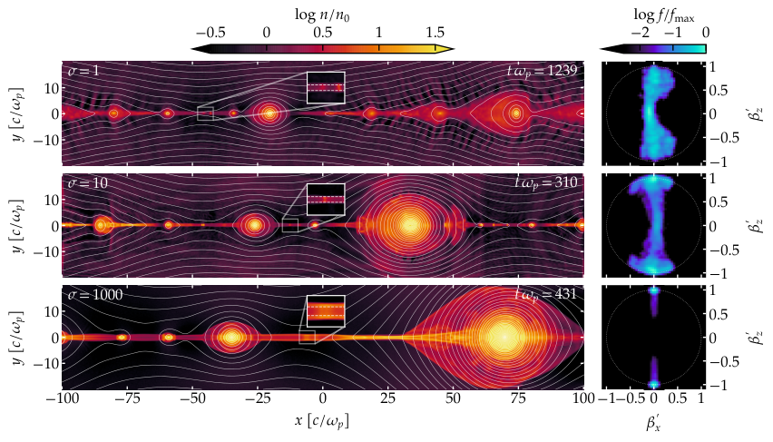
图注：左：总等离子体密度，白线为磁通等值线，插图给原初磁岛例子；上游磁化自上而下增大。右：从插图虚白线间取两物种，在出流静止系画排出方向和面外方向速度分量的直方图。面外速度展宽较大，排出方向较窄，且各向异性随磁化增强。 来源：arXiv:2611.02126论文原图。
怎么看这张图：右图是局地出流静止系的速度分布，先比面外与排出方向展宽，再找左侧原初小峰。 将局地粒子驱动与新生磁岛形态连起来。
来源与置信度：arXiv HTML；source verified；https://arxiv.org/html/2611.02126v1/density_insets_dists_xoutflow.png
图2：原初磁岛增长率的两种测量
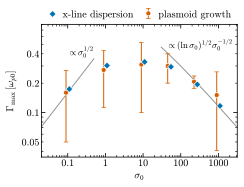
图注：原初磁岛的最大增长率随上游磁化变化。蓝菱形由模拟X点的粒子分布代入色散关系计算；橙圆为模拟电流片中线性电流扰动增长率的平均值，误差为一标准差。横向轻微错开以便阅读。 来源：arXiv:2611.02126论文原图。
怎么看这张图：蓝菱形是理论求根，橙圆是选中轨迹均值。误差棒是一标准差，非测量所有慢扰动。 直接检验Weibel线性预测。
来源与置信度：arXiv HTML；source verified；https://arxiv.org/html/2611.02126v1/weibel_growth_rate_scalings.svg
图3：磁岛出生的空间边界
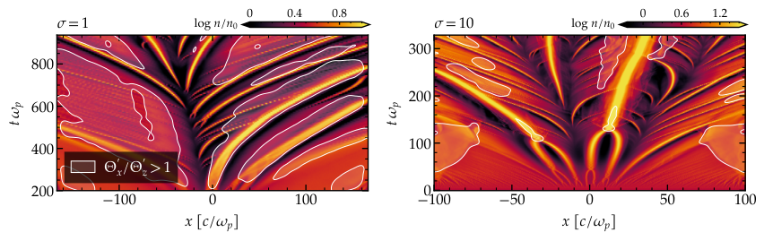
图注：磁化1与10时的中面密度时空图；在流入方向上对2个上游皮肤深度平均。白色为面内温度矩与面外矩之比大于1，表示对丝化稳定。坐标使两幅的Alfvén速率斜率相同；新岛出现在未着色区，磁化10时该区离主X点更远。 来源：arXiv:2611.02126论文原图。
怎么看这张图：跟踪密度峰在哪里首次出现，区别岛平流进入白区与白区当地生岛；图轴已重标。 以时空证据检验载流物质注入和稳定边界。
来源与置信度：arXiv HTML；source verified；https://arxiv.org/html/2611.02126v1/plasmoid_timestack_xoutflow_short.png
强相关工作
Weibel 1959给出速度各向异性激发横向电磁扰动的基本机制。本文保留这一机制而将实际X点粒子分布输入相对论色散关系，刻意不以平衡剪切磁场提供驱动；由此回答的是动态片早期播种，而非重做所有Harris片撕裂理论。
Robbins与Spitkovsky 2025的模拟指出低、高磁化重联形态从较开放排出转向磁岛主导；本文给出活动区长度随磁化增长的物理解读。Sironi等2016讨论形成后的磁岛及尺度分布，本文聚焦其更早的出生环节，两类工作不能相互替代。Philippov等2019将磁岛并合作为相干辐射机制之一，本文只为这种解释限制活动体积，未直接预测观测脉冲。
同一事件 / 同类源线索：
相似工作：
基础理论 / 方法工作：
相反观点 / 张力线索：
（未提供）
相关简报
1. Probing the nature of Galactic microquasars with diffuse gamma rays and neutrinos: low-mass versus high-mass X-ray binaries
- 来源：arXiv / astro-ph.HE
- 链接：https://arxiv.org/abs/2611.01000
- 作者：Pei-Pei Zhang, Wei Liu, Zong-Kang Zeng, You-Liang Feng, Yi-Qing Guo
- 公告 / 来源日期：2026-11-03
- 阅读层级：相关简报
- 评分：novelty 7/10，importance 8/10，relevance 10/10，final 9.40/10
- 推荐理由：低质量和高质量X双星空间分布给出不同的银河纵向伽马及中微子轮廓，可供LHAASO/IceCube联合检验。
中文题目：微类星体能否解释宇宙线膝？用银河经向形态比较两类X射线双星
问题、方法与结论：作者以低质量和高质量伴星X射线双星目录分别构造空间密度，作为微类星体人口代理，再与超新星遗迹及邻近源一起传播宇宙线。对三种假设使用同一双星注入谱指数2.1和5 PV截止刚度，分别归一到本地质子谱；都能过膝区。低质量双星的核球成分使伽马经向剖面更集中于银心，高质量双星盘分布更平。现有LHAASO误差下，伽马剖面还分不开三种情景。
意义与贡献：本地谱能固定注入量级，却不直接测到整座银河的源分布；空间形态提供另一约束。中央区域约10–100 TeV的每味中微子预测在高质量双星情景低约两倍，落在所比较IceCube模板包络下；这是指定模型下不利，并非对全体高质量双星的统计排除。
可借鉴之处：可以在同一源掩膜和纬度范围比不同能段的经向变化，再由中性π介子伽马分量折算带电介子的中微子贡献。逆康普顿、轫致辐射不能用于这一转换。图5中高于84 TeV的剖面能把两类空间模板的差别具体化。两能段也要分开，因为较低能处超新星遗迹贡献更多。
局限与关注点：双星总人口不等于实际喷流PeVatron人口，归一、气体、扩散及银河未分辨源仍退化。后续适合用独立距离、喷流占空率以及LHAASO和IceCube/KM3NeT一致区域联合拟合，不能由谱相容便断言微类星体主导膝。
图5：超过84 TeV的银河经向剖面
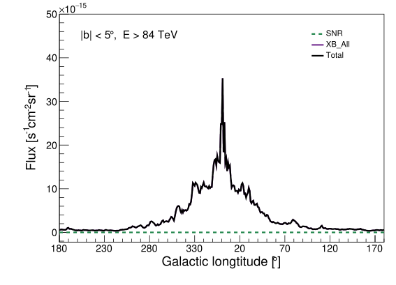
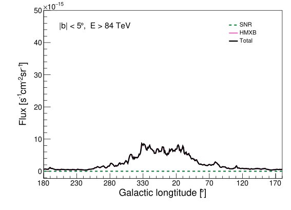
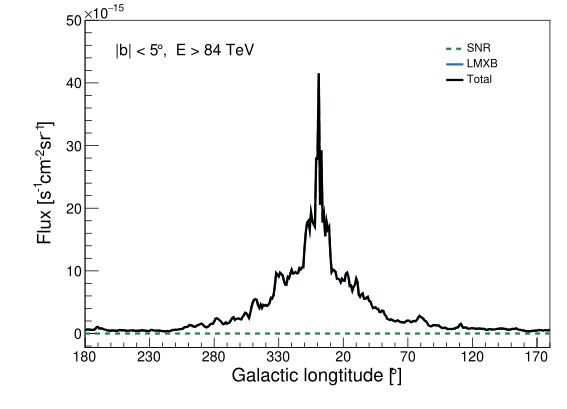
图注：与图4相同的银河经向弥散伽马比较，但积分能量为大于84 TeV，且取银河纬度绝对值小于5度。自上而下为全部X双星、高质量X双星主导、低质量X双星主导；绿为超新星遗迹，紫、粉、蓝为各自双星贡献，黑为总和。 来源：arXiv:2611.01000论文原图。 图5实际绘出模型剖面；对LHAASO数据的低能直接对照见图4。
怎么看这张图：上中下三种情景的中心集中度有差别，当前误差仍不能据此独立判定。 此处为模型曲线，不能当作高能数据点的直接检验。 给出可直接与LHAASO对照的空间预测。
来源与置信度：arXiv HTML；source verified；https://arxiv.org/html/2611.01000v1/gde_long2_84TeV_ALL.svg；https://arxiv.org/html/2611.01000v1/gde_long2_84TeV_HM.svg；https://arxiv.org/html/2611.01000v1/gde_long2_84TeV_LM.svg
2. A Multi-messenger Study of the Cygnus bubble
- 来源：arXiv / astro-ph.HE
- 链接：https://arxiv.org/abs/2611.03248
- 作者：Abhijit Roy, Giovanni Morlino, C Rishi, Jagdish C. Joshi, Soebur Razzaque, Neelam Panwar
- 公告 / 来源日期：2026-11-03
- 阅读层级：相关简报
- 评分：novelty 8/10，importance 7/10，relevance 10/10，final 9.35/10
- 推荐理由：将Cygnus气体靶、团簇终止激波及UHE伽马空间谱联合约束连接到中微子可检验预测。 全文复核：Bohm最优约化χ²仍6.16、>100TeV外缘欠拟合；降重要性8→7，仍为有用的条件比较。
中文题目：天鹅座泡的谱与形态同时检验团簇风：Bohm扩散较优，外缘仍有缺口
问题、方法与结论：作者在Cyg OB2团簇风终止激波模型中，联拟Fermi、HAWC、ARGO及LHAASO能谱和LHAASO三个能段的径向面亮度。用CO、21厘米线和自由自由辐射分别构造分子、原子及电离靶气体，并让六个分子云的视线位置在泡内变化。三种扩散中Bohm最接近数据，得激波半径约26 pc、质子最高能量3.28 PeV、宇宙线效率约2%；这是模型结果，并非直接测量。
意义与贡献：Kolmogorov、Kraichnan及Bohm的约化χ²依次31.88、10.09、6.16，形态信息可排斥只把能谱拟合得像的解。但最优值仍远高于1，尤其100 TeV以上外缘偏低；给低能中心加脉冲星与微类星体只改善部分残差，不能说整个泡已解释。
可借鉴之处：同一强子碰撞模型可同时预测伽马和中微子；Bohm情景的10年估算约为IceCube 4.11σ、KM3NeT 3.18σ，使用信号数除以背景平方根，未做逐事件扩展源似然。图中的既有约3σ区域超额及点源上限也有不同空间口径。加速效率与磁湍流的推断来自伽马拟合，而非由中微子数据独立反演。若改变源的空间模板，应重算背景，而非只按总流量换算。
局限与关注点：下一步应在LHAASO/LACT的角响应和源掩膜下检验能量依赖残差，并传播云距离、未分辨源与气体分相误差。全泡Bohm是强约束上限，集体终止激波是否形成也未确立；气体和扩散可互相补偿。论文支持可检验的强子情景，不能从拟合推成中微子发现或确定加速场所。
图4：天鹅座泡的伽马能谱和三段面亮度
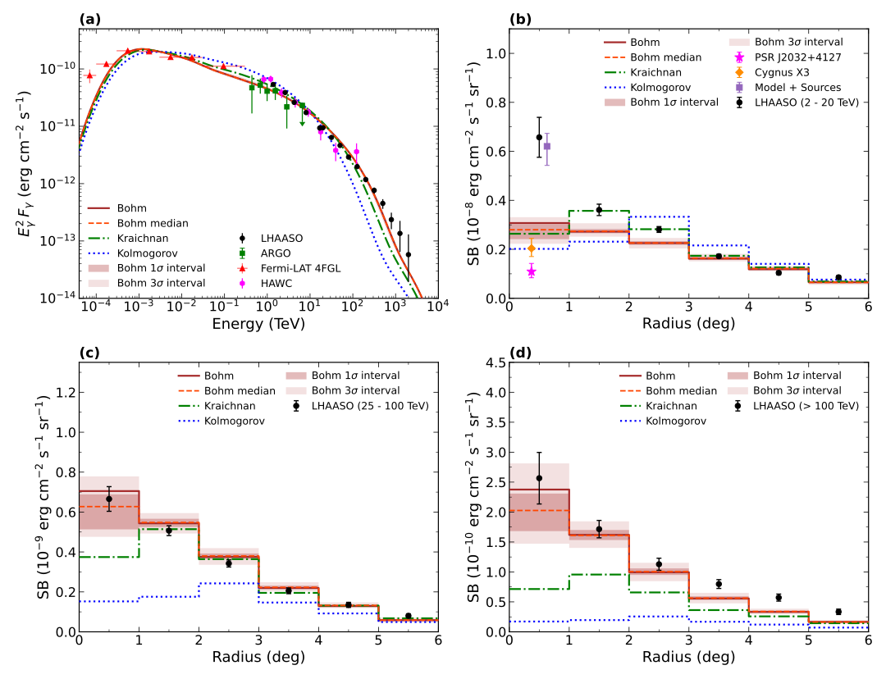
图注：(a) 天鹅座泡半径约6度内的伽马谱能量分布。三条模型曲线取联拟参数中位值，Bohm模型阴影为1σ及3σ可信区间，宽度接近线宽；并示不同仪器数据。(b) 2–20 TeV、(c) 25–100 TeV、(d) 大于100 TeV的伽马径向面亮度。 来源：arXiv:2611.03248论文原图。
怎么看这张图：看最佳曲线仍有低能中心与高能外缘残差；不能把狭窄后验带当总系统误差。 联拟结论与失败区域均在此图。
来源与置信度：arXiv HTML；source verified；https://arxiv.org/html/2611.03248v1/PACWB_result_combined.svg
3. Wide-field search for submicrosecond optical and gamma transients as manifestation of primordial black holes evaporation with the TAIGA-HiSCORE Cherenkov array
- 来源：arXiv / astro-ph.HE
- 链接：https://arxiv.org/abs/2611.00160
- 作者：I.I. Astapov, G.M. Beskin, P.A. Bezyazykov, A.V. Blinov, E.A. Bonvech, A.N. Borodin, N.M. Budnev, A.V. Bulan
- 公告 / 来源日期：2026-11-03
- 阅读层级：相关简报
- 评分：novelty 7/10，importance 7/10，relevance 10/10，final 9.05/10
- 推荐理由：HiSCORE同台短光脉冲和>100TeV群簇搜索提供罕见蒸发暴上限；两年增量和仪器口径可复用。
中文题目：用HiSCORE同时找亚微秒光闪与超高能伽马簇：两季未见超背景
问题、方法与结论：TAIGA-HiSCORE原为大气切伦科夫阵列，作者将同一站点定时用于两路罕见瞬变搜索。一条区分远方光闪和平常空气簇射、卫星激光，另一条在1000、100及6微秒尺度找近方向的多簇射，至少五站触发对应约100 TeV估算阈值。最短窗须拆开一次阵列触发的两处子事件，并用站间隔、缺角及方向条件剔除单簇射被误拆；模拟登记效率0.527。两季各剩一对，与各约一个随机背景相符。
意义与贡献：光学零结果不排除没有可见光的短伽马暴，故双通道独立约束原初黑洞蒸发候选。识别阵列失效站和几何缺口能造成假双事例，是将快定时应用于稀有事件搜索的核心结果；两对通过筛选也不是两个天体候选确证。
可借鉴之处：以无人机光电二极管球面前沿校验站定时，得到约0.63 ns时间散布；同一角窗算法用于数据与按季到达方向分布的泊松模拟。六季3478小时、视场0.6 sr给亮度至少10^-4 erg cm^-2 s^-1光闪的率限约5×10^-4 sr^-1 h^-1；两季1356小时给伽马窄群约10^-3 sr^-1 h^-1。两个时间窗的重建和几何条件不同，不能合并曝光以任意收紧界。
局限与关注点：这些是特定窗口、阈值与曝光下的瞬变事件率限，不是PBH空间密度或测得的霍金谱。平均均匀泊松近似不吸收气象引起的速率变化；后续可按实测时变背景和蒙特卡洛效率重估，且不把光学与伽马两个限值当同一爆发率测量。
图13：微秒级窄事件对的随机背景
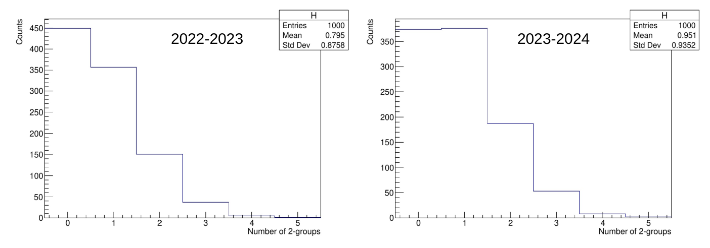
图注：2022–2023和2023–2024观测季的随机时空窄事件对数蒙特卡洛分布。时间间隔0–6微秒，已计入登记效率0.527。 来源：arXiv:2611.00160论文原图。
怎么看这张图：先比两季随机背景分布的中心与尾部；加了0.527的登记效率后，每季约一对，实际也各保留一对。纵轴是模拟次数，不能读成真实事件在每个区间的显著性。较长时间窗另用不同重建口径，不混入图13。 解释非检出而非展示可疑双脉冲为新发现。
来源与置信度：arXiv HTML；source verified；https://arxiv.org/html/2611.00160v1/FigMC0006.png
4. Lightest and heaviest nuclei as keys to the origin of ultrahigh energy cosmic rays
- 来源：arXiv / astro-ph.HE
- 链接：https://arxiv.org/abs/2611.00205
- 作者：Anna M. Suliga, Glennys R. Farrar
- 公告 / 来源日期：2026-11-03
- 阅读层级：相关简报
- 评分：novelty 8/10，importance 7/10，relevance 9/10，final 9.00/10
- 推荐理由：用Auger谱与组分检验轻核双族及重r过程成分有实质新约束；统计偏好不能唯一识别并合源。
中文题目：Auger谱支持第二类超高能轻核，但还不能锁定双中子星并合
问题、方法与结论：作者用Pierre Auger一期能谱和簇射最大深度的均值、散布检验双中子星并合模型：磁化外流的重核经光致裂解产生较低能轻核，另允许更高能、基线为纯质子的轻成分。采用EPOS-LHC-R解释空气簇射，比较有无独立轻成分及不同红移演化。加入轻成分的模型优于指定无喷流基线，作者把拟合差换算为约7.2–7.6σ；外流截断刚度约7.2 EV，独立质子截断约12 EeV。
意义与贡献：能谱、组分均值和组分宽度同时进入比较，比只看谱的折点更能检验是否需要第二成分。两种红移历史均可有相近的地球宇宙线拟合，因此“需要第二类轻核”比“确定了并合源”更接近证据。
可借鉴之处：作者以相同传播框架处理源内外光子作用，复拟合能标和簇射深度偏移，并在铁与代表重r过程核A=80的注入比例网格上查退化。基准模型偏好约7%重核注入，但图2显示并不要求非零；它和高于10 EeV的轻成分能量占比5–10%是两个量。能量标度和簇射模拟仍传到组分宽度，不能将观测量视为直接逐粒子称重。
局限与关注点：所谓喷流是独立轻成分的参数标签，当前数据不识别其物理产地；质子基准还未充分验证喷流内处理及He替代。将来应联合独立阵列组分、各向异性和超高能中微子谱区分源人口，不能把条件模型拟合差升级为7σ天体发现。
图1：有无高能轻成分的Auger谱和组分对照
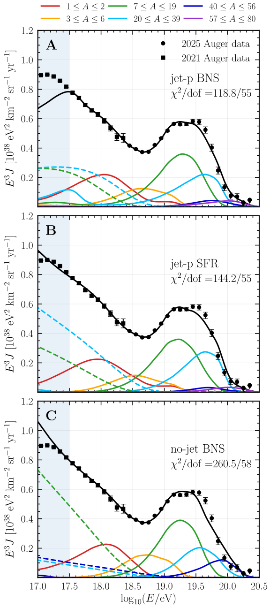
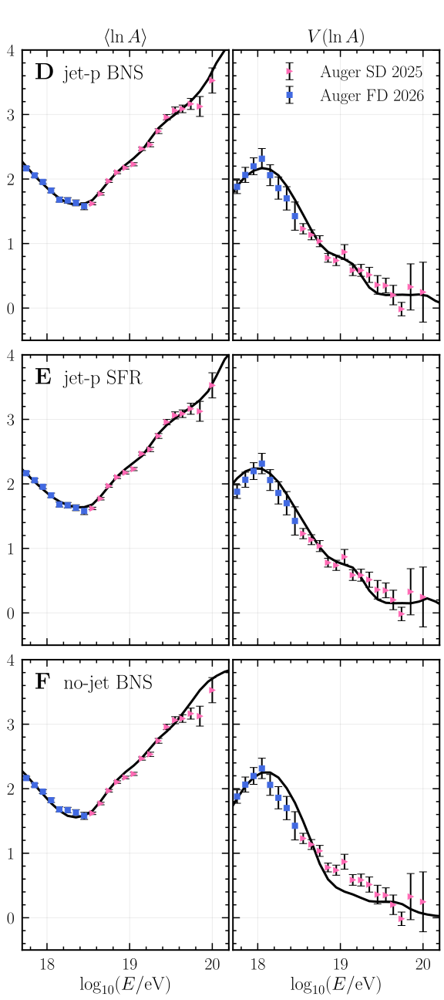
图注：以Auger数据检验双中子星并合启发的模型。上行是含高能轻成分、并合率演化的预测，左为能谱、右为组分观测量；中行改用恒星形成率演化；下行为没有该轻成分时最佳对照，按作者拟合比较差约7.6σ。 来源：arXiv:2611.00205论文原图。
怎么看这张图：比较上中行显示演化历史难区分，下行说明在指定基线不加轻成分拟合较差。 展示证据和源族不可识别边界。
来源与置信度：arXiv HTML；source verified；https://arxiv.org/html/2611.00205v1/Fig1A.svg；https://arxiv.org/html/2611.00205v1/Fig1B.svg
5. Probing the geometry and outflows of the accreting millisecond pulsar SAX J1808.4-3658 with multi-band polarimetry
- 来源：arXiv / astro-ph.HE
- 链接：https://arxiv.org/abs/2611.00221
- 作者：M. C. Baglio, G. Illiano, A. Papitto, D. M. Russell, A. Di Marco, K. Alabarta, C. Ballocco, S. Campana
- 公告 / 来源日期：2026-11-03
- 阅读层级：相关简报
- 评分：novelty 7/10，importance 8/10，relevance 8/10，final 8.70/10
- 推荐理由：VLT光偏振和首次IXPE方向并比能约束吸积毫秒脉冲星喷流几何；多起源仍有退化。
中文题目：光学偏振几分钟内转动：用IXPE方向约束SAX J1808喷流基部
问题、方法与结论：作者用VLT/FORS2监测SAX J1808.4−3658的2025年暴发，配合IXPE持续X射线偏振和LCO多色光变。光学偏振约0.3%–1.5%，快采样时偏振角在分钟内摆动达约40度。主暴发平均角比IXPE方向偏16–24度，同时光学偏振随相对于盘轨迹的红色过量增强；红过量和同期射电更符合喷流参与，而非稳定盘散射单独产生。
意义与贡献：盘可贡献大部分总光，却不必贡献大部分偏振光。用X射线脉冲轮廓模型给出自旋方向参照，再看光学角和颜色变化，可以约束内盘、磁场和喷流几何。角偏移不等于整条喷流倾斜；宽锥基部多普勒不对称也可造成净角变化。
可借鉴之处：2019及2025样本的主暴发偏振—红过量拟合提供跨历元对照。再耀发开始的9月4/5日却偏离该关系：R带角47.2±3.4度近IXPE的46±5度，I带只给0.98%的3σ上限。分阶段比较比将所有偏振拟合成单一成分更有辨识力。颜色比较使用相近夜晚的LCO配对光度，主暴发的净红过量还依赖单温黑体盘参考；独立射电才增加喷流解释的可信度。
局限与关注点：作者暂偏向再耀发时盘—磁层边界同步辐射，但射电弱不排除衰减喷流，风散射也可能。R/I曝光非严格同时，快变可伪造颜色或带间偏振差。需同步快光学多色偏振、X射线及射电，才能将喷流场结构和内盘成分区分。
图4：喷流颜色过量与光学偏振度
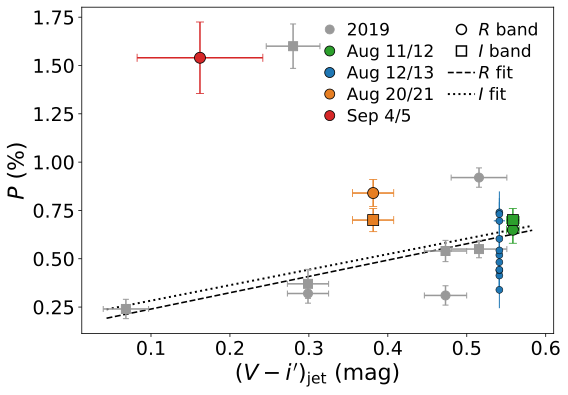
图注：2019年（灰）及2025年（颜色同图1）暴发的偏振度与喷流颜色过量。小圆为8月12/13日子历元；R带虚线加权拟合斜率0.84±0.22，排除9月4/5日；I带点线斜率0.80±0.13，排除2019年第6历元。 来源：arXiv:2611.00221论文原图。
怎么看这张图：横轴是相对盘颜色轨迹定义的红过量，纵轴是偏振度；注意灰点为2019年，颜色点为2025年。9月4/5日红色高偏振点未参加R带拟合，两线同向上升不意味着再耀发也由同一机制。 直接检验主爆发喷流解释，保留选择口径。
来源与置信度：arXiv HTML；source verified；https://arxiv.org/html/2611.00221v1/P_vs_jetcolor.svg
6. A GeV PWN Candidate in the PSR J1135--6055/G293.8+0.6 Field
- 来源：arXiv / astro-ph.HE
- 链接：https://arxiv.org/abs/2611.03266
- 作者：Liancheng Zhou, Yunlu Gong, Jun Fang, Li Zhang
- 公告 / 来源日期：2026-11-03
- 阅读层级：相关简报
- 评分：novelty 7/10，importance 7/10，relevance 9/10，final 8.70/10
- 推荐理由：20GeV以上LAT局部超额与MeerKAT/Chandra已知PWN位置相容，提供CTA随访候选而非关联确证。
中文题目：PSR J1135−6055旁的硬GeV超额：位置相容的脉冲星风云候选
问题、方法与结论：作者用17.95年Fermi-LAT的20 GeV–1 TeV全相位数据，在G293.8+0.6内得到TS=26.30、光子指数1.63±0.33的点源模型。拟合位置距脉冲星1.83角分，落在约3角分的95%统计定位范围内。16.04年的1 GeV–1 TeV脉冲谷相位检验只有TS=15.80，未独立达到目录阈值；全相位超额不能排除磁层光子。
意义与贡献：MeerKAT射电和Chandra已独立显示风云与喷流状结构，LAT提供一个值得随访的高能候选。但圆盘和高斯扩展TS仅0.24和0.46，得到的是上限，仍允许源宽度与约3角分射电风云相当。定位相容、硬谱和未分辨三件事不能拼成已确认GeV风云。
可借鉴之处：用独立喷流成分解释Chandra、单区电子正电子同步谱和逆康普顿解释射电与GeV，可同时检查H.E.S.S.银道面巡天上限。拟合只自由化电子斜率、场强和总能量等，距离、软光子场、电子谱折点及截止固定；因此它证明模型可行，不是独立反演所有电子参数。
局限与关注点：同一区域气体模板未改善拟合，仍不能排除未分辨靶气体。CTA南站可用更好角分辨率、TeV谱和更强上限检验风云解释；重复LAT门控时，应保留不同能区、时段和脉冲星星历有效期，不能把全相位TS当门控结果。现有H.E.S.S.上限为大于1 TeV时约2.21×10^-13 ph cm^-2 s^-1，采用0.1度孔径及指定谱指数；不能据北天巡天未覆盖推断该处非检出。
图1：全相位硬GeV超额与脉冲星、射电结构
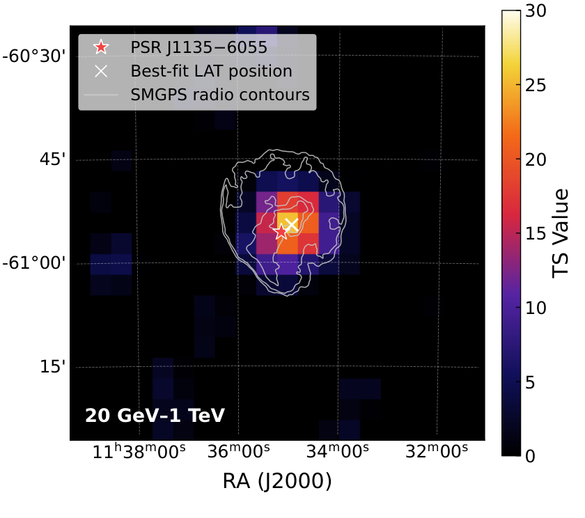
图注：加入采用的点源模板之前的20 GeV–1 TeV全相位TS图。1度×1度，原生0.05度像素，无平滑；逐像素只拟合光子指数固定为2.0的点源归一。红星为脉冲星，白叉为LAT最佳位置，灰线为SMGPS的1.28 GHz遗迹射电轮廓。 来源：arXiv:2611.03266论文原图。
怎么看这张图：比较白叉与红星和射电轮廓；TS图不表示已识别风云，也不能判别延展。 展示核心空间证据及定位条件。
来源与置信度：arXiv HTML；source verified；https://arxiv.org/html/2611.03266v1/AAS77860R3fig01.png
7. Deconvolved IXPE Polarization Maps of the Crab Nebula in a Maximum-a-Posteriori Framework
- 来源：arXiv / astro-ph.HE
- 链接：https://arxiv.org/abs/2611.01820
- 作者：Keisuke Uchiyama, Mikio Morii, Toru Tamagawa
- 公告 / 来源日期：2026-11-03
- 阅读层级：相关简报
- 评分：novelty 7/10，importance 8/10，relevance 8/10，final 8.70/10
- 推荐理由：IXPE含位置/偏振响应MAP重建改善蟹状星云喷流几何辨识，但系统响应简化限制物理结论。
中文题目：把IXPE偏振和强度一起反卷积：蟹状星云喷流磁场方向的新诊断
问题、方法与结论：作者对IXPE首个蟹状星云观测做2–8 keV最大后验反卷积，把天空位置与16个偏振角格联合放进响应，以相位可变点源加稳定星云区分脉冲星。空间和角度平滑超参数经交叉验证选择。新图比直接分像素分析更清楚显示喷流，在喷流身至尖端的小区，重建的磁场取向倾向垂直于局部强度梯度。
意义与贡献：强度形态和偏振方向的关系可区分磁场变化和纯图像模糊。作者分别以无偏振、保留偏振度但逐像素随机角为零假设，每种5000次前向模拟和同法重建，得到角差集中统计量0.61的单侧尾部概率0.0012和0.0018。它衡量指定区域和响应模型下的图案，不证明全喷流或某个MHD机制。
可借鉴之处：重建像素值不是直接光子数，因此最小可探测偏振度不能照搬计数公式。图5用无偏振模拟的逐像素90分位作经验门槛；作者还分清喷流轴与局部强度梯度，前者的磁场方向沿程变化，不妨碍后者局地近垂直。
局限与关注点：简化PSF、3 keV单色调制、未纳入偏振泄漏及晕影会影响空间偏振误差，蒙特卡洛并未覆盖这些失配。可把多观测、位置依赖谱和完整响应纳入同一估计再比理论喷流，不能把更锐的反卷积图当作更高分辨率独立观测。原作者也未据此区分扭结不稳定与喷流撞击介质。
图5：逐像素偏振、磁场与亮度梯度
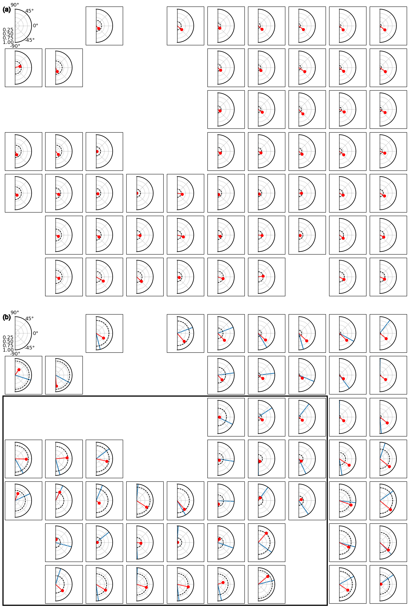
图注：(a) 基础法在喷流区逐像素结果；红矢量沿磁场，长度随偏振度，虚半圆是90%最小可探测偏振度，共用左上角刻度。(b) 反卷积结果，红矢量定义同左，蓝线为反卷积强度梯度，虚半圆为无偏振模拟得到的经验90%最小可探测偏振度，黑框为喷流身至尖端的统计小区。 来源：arXiv:2611.01820论文原图。
怎么看这张图：红矢量和蓝线分别为磁场方向和梯度；黑框是统计小区，半圆是经验或计数MDP而非误差线。 显示地图变化、统计区域和检出门槛区别。
来源与置信度：arXiv HTML；source verified；https://arxiv.org/html/2611.01820v1/pol_jet_combine.png
8. A temporally clustered gravitational wave pair and a Type IIb supernova
- 来源：arXiv / astro-ph.HE
- 链接：https://arxiv.org/abs/2611.00440
- 作者：Sheng Yang, Ting-Wan Chen, Weichangfeng Guo, Brian D. Metzger, Yuhao Zhang, Amar Aryan, Juntao Bai, Thomas de Boer
- 公告 / 来源日期：2026-11-03
- 阅读层级：相关简报
- 评分：novelty 7/10，importance 7/10，relevance 8/10，final 8.35/10
- 推荐理由：提出可检验的双GW时空重合与IIb事件，边缘信号和事后多重比较不足以确证共同源。
中文题目：两次相隔7小时的边缘引力波触发与一颗IIb超新星：共同起源仍待证实
问题、方法与结论：作者在公开GW警报与剥离包层超新星中找到S190910d和S190910h，间隔7.1小时，三维定位与SN 2019rsq相容。保留天区和距离核、随机触发时刻的模拟中，在指定低质量/质量隙警报子集，达到采用的时空阈值的单对概率为7.6×10^-5；去掉距离信息仍约1.41×10^-4。两触发是边缘候选，重新匹配滤波呈信号样，不等同两个确证并合。
意义与贡献：异常主要是GW对的近时同向，而不是超新星本身罕见：同体积与时窗中随机出现IIb的近似概率约0.35。超新星没有覆盖足以独立定爆炸时刻的早期光度；采用第一触发时刻给约24天升亮，只证明光变相容。
可借鉴之处：条件于SN位置与距离，后一次低质量解约2.5+1.3太阳质量；前一次约34+3来自独立进动波形质量推断，另检查在SN距离的投影幅度，不是两者同一种条件化后验。把重合、独立信号重取与幅度自洽分开，有利于未来预先定义关联检验。
局限与关注点：塌缩星盘碎裂可以安排小时尺度的两并合，是机制候选。单对概率不含整个目录的寻找次数和光学分类选择函数，也不是三重共同源概率。需独立更显著触发及更早光变才能检验这一机制，不能由质量相容和事后模型推成已发现新通道。目前允许两次噪声或无关来源等替代，后续显著事件需按独立的预注册匹配窗口复核。
图2：两个引力波触发在时间差与三维重合上的位置
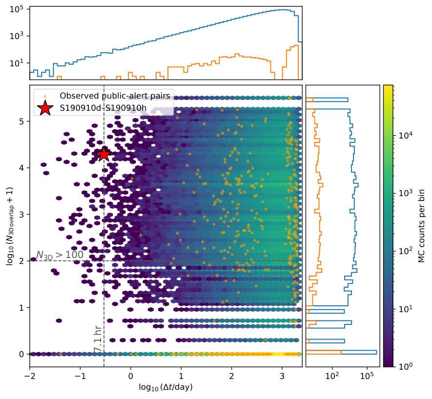
图注：横轴为触发时间差的对数，纵轴为三维重合HEALPix像素数加1的对数。六边形来自随机化触发时刻且保留定位与距离的模拟，橙点为所选O3–O4b公开低质量或质量隙候选对，红星为目标对。竖虚线标7.1小时，横虚线为采用的100像素重合阈值，边缘给两种分布。 来源：arXiv:2611.00440论文原图。
怎么看这张图：红星在模拟尾部但检验只针对所选对和口径，未校准全目录事后试验。 同时展示异常量和对照总体。
来源与置信度：arXiv HTML；source verified；https://arxiv.org/html/2611.00440v1/time_overlap_density_ns.png
9. X-ray Variability of Mrk 421 in 2025 January: A Ten-Day XPoSat XSPECT Campaign with Contemporaneous NICER Coverage
- 来源：arXiv / astro-ph.HE
- 链接：https://arxiv.org/abs/2611.02772
- 作者：Sikandar Akbar, Zahir Shah, Zahoor Malik, Faheem Aalijah, P Sreekumar, Vivek Kumar
- 公告 / 来源日期：2026-11-03
- 阅读层级：相关简报
- 评分：novelty 7/10，importance 7/10，relevance 8/10，final 8.35/10
- 推荐理由：同期XSPECT/NICER和同计数率不同谱态对照，能检验单一硬亮关系，不把耀发衰减直接等同冷却。
中文题目：亮度相同也能有不同能谱：Mrk 421十天双仪器X射线监测
问题、方法与结论：作者用2025年1月十天XPoSat/XSPECT约202 ks和同期NICER数据测Mrk 421。XSPECT光变分出26个贝叶斯块；最受约束的耀发指数上升约3小时、衰减约30小时。日谱及流量分组用对数抛物线，1 keV斜率从暗态2.24到亮态1.96，同步峰约0.66升到1.06 keV，曲率约0.7未显著改变。联合谱处理固定银河吸收和仪器边缘，不能把约1.7 keV残差当源吸收特征。
意义与贡献：同一亮度并不唯一决定谱。约1.30计数/秒的两个亮块，一个在早期下降、一个在末次耀发上升，短时幂律斜率约2.35与2.10；作者依其90%误差换算得到约6.4σ，属所比较的谱差，不是全搜索显著性。分离流量趋势与历史依赖可约束注入、冷却、逃逸的组合。
可借鉴之处：八个近同时历元的XSPECT和NICER计数率相关系数0.941；日谱与短时块不同，后者光子不足以稳定估曲率，故固定能带比较有效斜率。不同XSPECT视场的重现是仪器内部交叉检查，非第二独立天体观测。
局限与关注点：典型场强下冷却可比30小时短，但不能单凭慢衰减判定加速逐渐关闭。两块被缺测分隔，不能画成同一耀发完整的谱滞回环；未来TeV/X射线同步连续覆盖，才能将峰能变化和加速时标真正对应。十天内的统计只约束本轮活动状态；若其他周期的峰能和谱斜率变化不同，应重新估计系统误差，不能把单次结果普遍化。
图8：Mrk 421亮度、谱指数与曲率
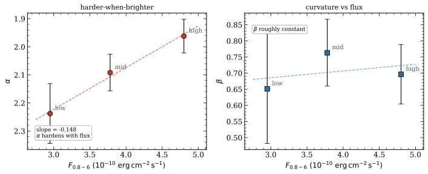
图注：在1 keV定义的光子指数（左）和曲率（右）对三个流量状态的0.8–6 keV去吸收流量。指数随流量单调变硬，最低和最高态置信区间不相交；曲率较大且近似不变。误差棒为90%置信区间。 来源：arXiv:2611.02772论文原图。
怎么看这张图：先看左边斜率变化，再看右边曲率区间；光度分组趋势不等于同光度谱唯一。 准确显示硬随亮增和不显著曲率变化。
来源与置信度：arXiv HTML；source verified；https://arxiv.org/html/2611.02772v1/fluxres_alpha_beta.svg
10. Milliarcsecond-scale jet reorientations in GRS 1915+105 pointing towards a warped accretion disc
- 来源：arXiv / astro-ph.HE
- 链接：https://arxiv.org/abs/2611.03395
- 作者：L.I. de Regt, P. Atri, S.E. Motta, R.P. Fender, J.C.A. Miller-Jones, D.R.A. Williams-Baldwin
- 公告 / 来源日期：2026-11-03
- 阅读层级：相关简报
- 评分：novelty 7/10，importance 8/10，relevance 7/10，final 8.35/10
- 推荐理由：毫角秒喷流最大偏转及8小时内稳定性排除特定快速进动解释，为长时遮挡和翘曲提供新限制。
中文题目：GRS 1915+105遮挡期毫角秒喷流偏转：内盘快速进动不足以解释
问题、方法与结论：GRS 1915+105在2018年后X射线长时暗而射电仍亮。作者用VLBA 8.4 GHz一次、EVN 4.9 GHz三次在2019–2021年观测，每个历元约8小时。前三次测得投影位置角约15.3、18.6、170.9度，第四次未检出；角以180度折叠，后两次相隔126天的最小变化为27.7度。相对于遮挡前毫角秒平均142±7度，最大偏离57±8度。
意义与贡献：毫角秒结构更靠近喷流发射区，避免把远处旧抛射的方向直接当成当前喷流。E1的8小时内角变化不超过约5度，若平稳进动则投影速率不超过约15度/日；与作者计算的内侧厚盘快速Lense–Thirring内盘进动尺度不符，不能由一个内盘快转解释长期偏转。
可借鉴之处：把角度按180度折叠，区别时间变化和不同频率取样不同喷流位置。文章也检查射电爆发期的校准源以区分真实流量增长。跨历元同频变化给最小速率约0.2度/日，历元内只给上限，两者不构成周期测量。
局限与关注点：辐射驱动盘翘曲可联系多年X射线遮挡及射电方向偏转，但该系统靠近翘曲模式参数边界，密集采样尚不足区分连续、随机或多模变化。可用同频高节奏VLBI配合XRISM吸收谱检验；不把未检出第四历元当喷流终止。具体来说，跨频率角差可能只是弯曲喷流在不同位置变得透明；用相同频率重复量方向比拼接两台设备的零散角度更有判别力。
图5：遮挡前后喷流位置角对比
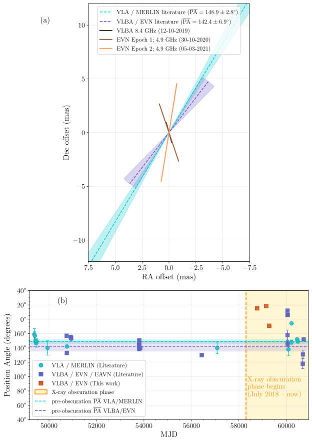
图注：(a) 本文2019–2021年VLBA/EVN喷流位置角和历史VLBA、EVN、EAVN、VLA、MERLIN平均值，历史线段长度不按比例。(b) 各次位置角随修正儒略日变化，角以150度为中心按180度折叠；阴影为2018年7月以来的X射线遮挡期，个别测量及引用见表3。 来源：arXiv:2611.03395论文原图。
怎么看这张图：左边显示本次三次检出的毫角秒喷流方向和历史平均，右边在150度附近按180度折叠。比较相对遮挡前基准的偏离；稀疏观测和不同频率不能连成唯一周期，阴影只标明X射线遮挡阶段。 直接展示稀疏采样下的偏转及其范围。
来源与置信度：arXiv HTML；source verified；https://arxiv.org/html/2611.03395v1/PAs_AnglesEvolution_combined_weighted_mean_LargerLabels_NoVLA.svg
11. Galaxy cluster thermodynamics at z=1.7: Resolved tSZ and X-ray analysis of CL J0459.6-4946
- 来源：arXiv / astro-ph.HE
- 链接：https://arxiv.org/abs/2611.00132
- 作者：J. van Marrewijk, L. Di Mascolo, S. Ueda, T. Mroczkowski, T. Akahori, E. S. Battistelli, M. J. Devlin, A. Flores
- 公告 / 来源日期：2026-11-03
- 阅读层级：相关简报
- 评分：novelty 8/10，importance 8/10，relevance 6/10，final 8.30/10
- 推荐理由：ALMA tSZ和X射线在z=1.7解开压力密度并约束团簇冷锋，强证据但与高能个人方向较远。
中文题目：在红移1.7分辨星系团热气体：ALMA压力图和X射线冷锋线索
问题、方法与结论：作者联合ACT、ALMA两波段热Sunyaev–Zeldovich效应和Chandra/XMM-Newton数据，测CL J0459.6−4946的电子压力、密度、温度和熵。毫米波压力积分与主要依赖密度平方的X射线亮度互补；中心温度约14 keV，内区熵约200 keV cm²且较平，视线有效深度约360±30 kpc。东南侧以南的密度增强伴低温和低熵，却无明显Compton y增强，与近等压晃动冷锋相容。
意义与贡献：远团的温度谱难有足够计数，加入毫米波使二维热力学诊断成为可行的个案。若仅看X射线亮斑，可能把冷而密的区域误判成压力增强；对比y图可区分冷锋解释和强激波，但这里的熵凹陷显著性不高。
可借鉴之处：要同时比较径向与投影图，控制ALMA干涉可恢复角尺度、点源及温度测量口径。作者固定视线深度为r500时，在投影约0.5r500内得到密度平方矩比的平方根约1.17；更短几何深度也能造成相似结果，不能把团块度与几何独立测定。
局限与关注点：该团是动态、单对象案例，弱透镜与静水平衡质量偏差误差跨零，不能推广所有高红移团。对高能弥散源，气体几何与非热分量仍需联合限制；后续更深X射线和独立速度/射电信息可检验晃动与并合假设。静水估计需近稳态，而该团视线投影和可能并合正破坏这一条件。样本不足以建立普适的红移趋势，深曝光的收益应以可辨角尺度和独立投影信息判断。
图11：ALMA与两套X射线数据联合的星系团热力图
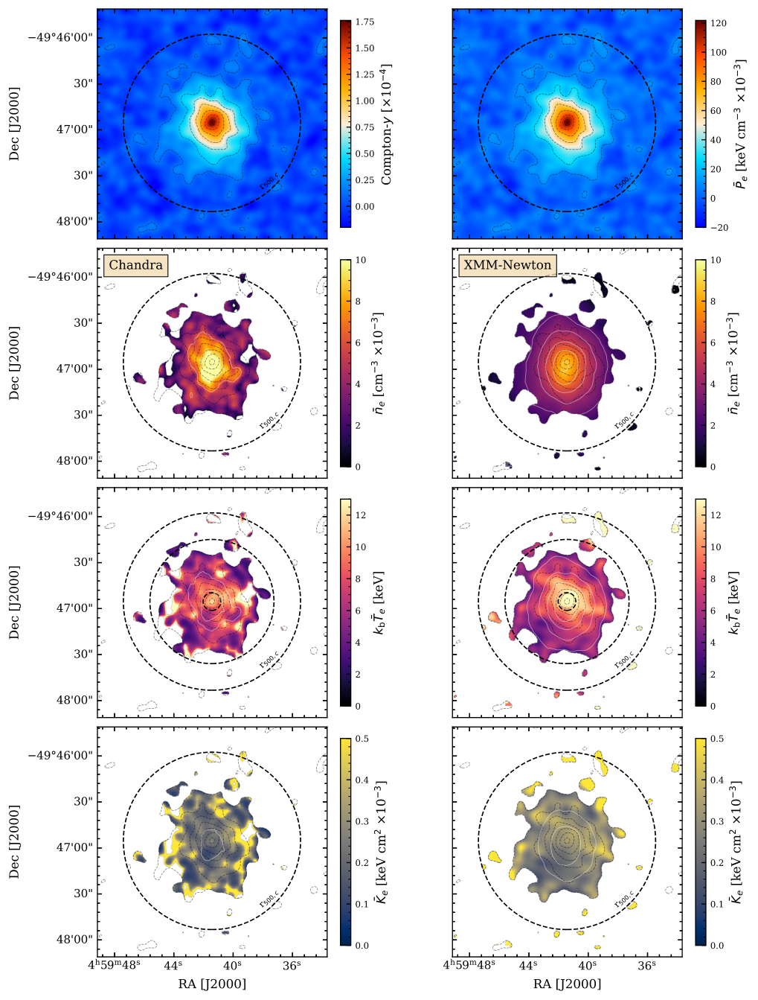
图注：ALMA和ACT热SZ与Chandra（左）及XMM-Newton（右）推导的投影热力学图。遮蔽Compton-y信噪低于2的像素；黑线沿用图7，白线为各量1.5、2.5、3.5、4.5和5.5σ信噪等值线。虚圆为r500,c，温度图另给0.1与0.7倍r500,c以标记图10的温度平台。 来源：arXiv:2611.00132论文原图。
怎么看这张图：先看左右相同位置的温度和熵，再看y等值线；低信噪像素已遮蔽。 显示冷锋的共址线索与数据覆盖。
来源与置信度：arXiv HTML；source verified；https://arxiv.org/html/2611.00132v1/thermo_grid_both.png
12. CHIME All-sky Multiday Pulsar Stacking Search (CHAMPSS): Power Spectrum Injections and Survey Sensitivity
- 来源：arXiv / astro-ph.HE
- 链接：https://arxiv.org/abs/2611.00341
- 作者：Reynier Squillace, Lars Künkel, Robert Main, Scott M. Ransom, Wenke Xia, Kathryn Crowter, Victoria Kaspi, Ingrid Stairs
- 公告 / 来源日期：2026-11-03
- 阅读层级：相关简报
- 评分：novelty 7/10，importance 7/10，relevance 7/10，final 8.00/10
- 推荐理由：功率谱域注入避免多天脉冲星搜索的时序开销，直接测量红噪声和采样对选择函数的影响。
中文题目：在功率谱里注入模拟脉冲星：CHAMPSS找到多日叠加的选择偏差
问题、方法与结论：CHIME全天多日脉冲星堆叠搜索需大量注入以测灵敏度，逐日重复合成和处理时序代价过高。作者由折叠脉冲生成谐波，在已有数据功率谱中按通道色散、有限采样、窗函数及噪声归一注入，再用原搜索流程查能否找回。较易检出的是约0.1–100 Hz、亮于约1 mJy的区间；低于0.1 Hz受红噪声，高频近Nyquist处受采样衰减。
意义与贡献：长时间叠加不保证每类脉冲星都同等获益。低频即使单步名义功率较高也可能被聚类和红噪声拖累；多日叠加对0.1–1 mJy区间提高找回率，但快双星和间歇源仍常由单日搜索发现。简单辐射计方程会过高估计慢自转目标的灵敏度。
可借鉴之处：图7用至少50%找回的经验流量阈值，比较叠加天数、自转周期与白噪声方程的预测。注入校准直接测完整流程的选择函数，适用于用真实噪声检查完备性，而不只把理论信噪阈值套到巡天目录。在不同方向和周期重复注入，可避免把非均匀无线电干扰产生的天区差别误当真实人口不均匀。
局限与关注点：色散测度依赖弱部分源于在高色散天区细分频率通道，未完整模拟强散射；周期、占空比和方向也有联合效应。比较不同巡天人口应保留注入域和参数范围，不能把简单的“1 mJy”作为每颗目标的硬门槛。
图7：叠加天数和周期如何改变50%找回阈值
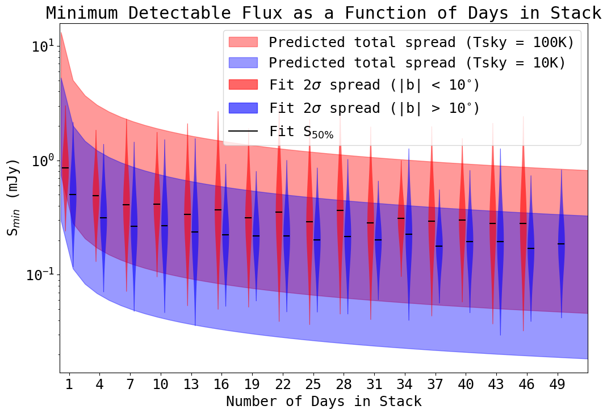
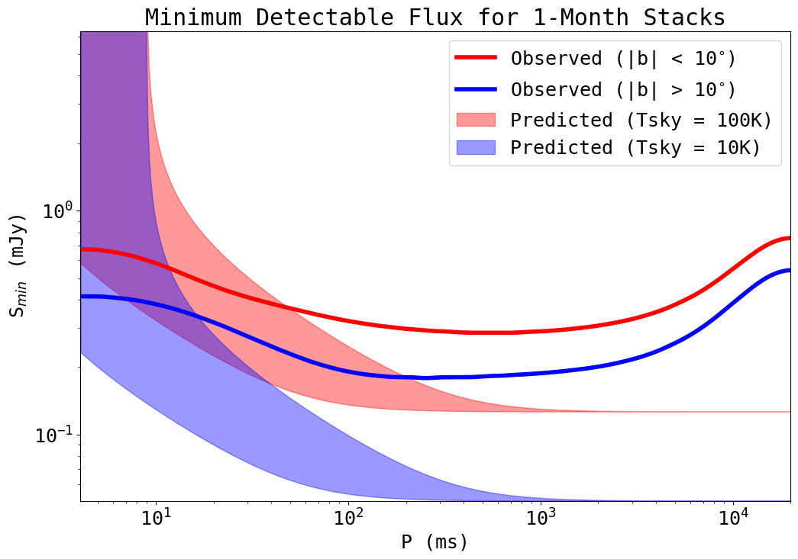
图注：左图为最小可检流量密度对叠加天数，右图对自转周期。粗线为至少回收50%注入的阈值；辐射计方程阴影扫不同通道化的色散范围，左图还扫1至250 Hz。该方程采用信噪7、占空比2.6%，注入限制1.5%–3.6%。叠加天数趋势大体相合，周期趋势不合归因于长周期红噪声。 来源：arXiv:2611.00341论文原图。
怎么看这张图：曲线为限定注入域的经验回收率，阴影是辐射计预期；慢脉冲受红噪声额外抑制。 给出最可操作的巡天完备性诊断。
来源与置信度：arXiv HTML；source verified；https://arxiv.org/html/2611.00341v1/Smin_vs_Ndays.png；https://arxiv.org/html/2611.00341v1/Smin_vs_period.png
13. Rapid growth in a dual active galactic nucleus during a gas-rich merger at z ≈ 4.5
- 来源：Nature Astronomy
- 链接：https://www.nature.com/articles/s41550-026-03008-z
- 作者：Hyewon Suh, Roberto Decarli, Emanuele Paolo Farina, Julia Scharwächter, Mar Mezcua, Giorgio Lanzuisi, Federica Loiacono, Brian C. Lemaux
- 公告 / 来源日期：2026-10-30
- 阅读层级：相关简报
- 评分：novelty 8/10，importance 7/10，relevance 8/10，final 8.65/10
- 推荐理由：阅读全文作者版24页。空间分辨双宽Hα与独立[CII]运动学构成有价值的新观测；但超爱丁顿依赖MYtorus，非CT模型给0.2–0.5，宿主动力学质量仅数量级且气体质量超过动力学质量。对群体共同演化的推进有限，重要性由8修订为7，列相关简报。期刊2026-10-30，全文为7月21日v1，不宣称最终期刊全文已核验。
中文题目：富气并合中的双活动星系核：LID-1166的空间分辨证据与吸积模型边界
问题、方法与结论：科学问题是高红移、强遮蔽并合系统中的两个黑洞能否被分别识别。作者用JWST近红外积分视场光谱减去主核点扩散函数，分离两个宽Hα成分，再用ALMA的[CII]冷气体运动学交叉核对。在红移约4.5的LID-1166中，两核投影相距0.23角秒、约1.5千秒差距，窄线视向速度相差约−164±3千米/秒；异地宽线与不同冷气体分量共同支持双活动核，而不只是图像上的两个亮斑。这里读的是2026年7月21日作者版v1；期刊发表于10月30日，最终期刊正文未取得。
意义与贡献：这项观测说明，光学不可见的X射线源可能隐藏紧邻的活动核，空间分辨谱线能补充宽带成像的漏检。但单个系统不能确定这类天体的丰度，也不能证明并合必然驱动超爱丁顿增长。作者版的“首个”措辞在期刊摘要中已弱化，本简报只报告稀有双核实例。
可借鉴之处：可借鉴的是分层排除混淆：改变点扩散函数中心、提取孔径并采用标定星模型检验伴核是否持续存在，再比较宽线、窄线与毫米波冷气体。黑洞质量来自单历元宽Hα定标，主核与伴核约为6900万和1700万太阳质量；其约0.4 dex定标散布比窄线速度的统计误差更重要，不能把不同误差口径混用。
局限与关注点：局限集中在增长解释。Chandra无法分辨两核，MYtorus吸收模型给整个系统爱丁顿比约3.7，但简单非康普顿厚模型只给0.2–0.5；前者相对简单幂律的改进仅ΔC=3.38，不能写成两个黑洞分别确定超爱丁顿。气体质量约820亿太阳质量还高于约510亿的动力学估计，反映转换因子、孔径与非平衡运动的不确定性。与本地宿主关系相容依赖把动力学质量代作核球质量；10/100百万年的恒定增长箭头是示意外推。下一步需要更好的X射线吸收约束、冷气体动力学及系统样本。
图1
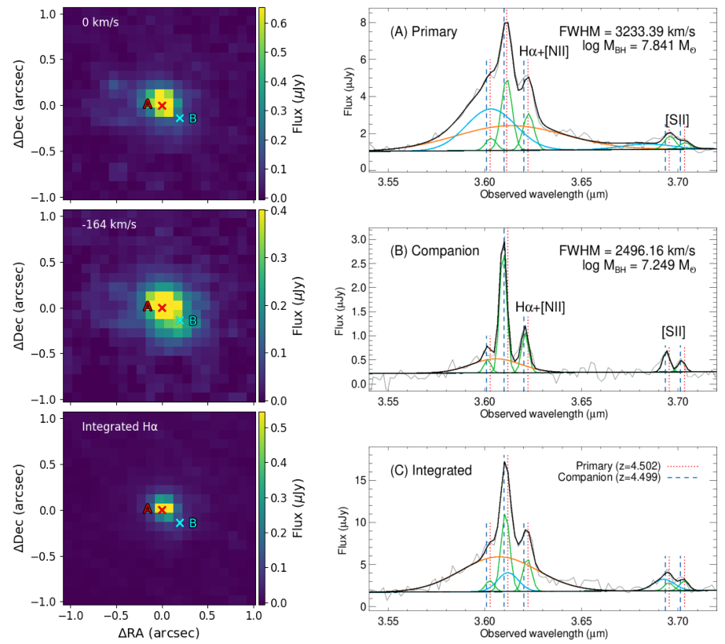
图注：图1｜JWST NIRSpec积分视场观测在LID-1166中检出近距离双活动星系核。左：Hα发射线图；上为0千米/秒速度通道（以红移4.502定义），中为−164千米/秒通道，对应伴核速度偏移，下为Hα+[NII]区域的速度积分图。红色和青色十字分别标出主核A与伴核B，由减去点扩散函数后的Hα发射质心确定（见扩展数据图1）；投影间距0.23角秒，在红移约4.5处约为1.5千秒差距。右：空间分辨Hα谱线拟合。A为原始数据立方中以主核为中心、半径0.2角秒孔径提取的点扩散函数模型模板；B为减去该模型后的残差立方中以伴核为中心、半径0.2角秒孔径提取的光谱；C为半径0.6角秒孔径的积分光谱。灰线是观测谱，黑线是最佳拟合，包含幂律连续谱（黑）、窄线（绿）及宽线（橙、蓝）。红色竖点线与蓝色竖虚线分别表示主核红移4.502与伴核4.499。两个核均显示不同的宽Hα发射，作者据此确认两个正在吸积的超大质量黑洞。
怎么看这张图：先看右侧B中减去主核后仍存在的宽Hα，再与左侧伴核位置对应；窄线速度差与宽线是不同信息。该图支持双核身份，不能单独测得两核各自的总光度或爱丁顿比。图为作者版原图，最终期刊版本未逐面板核验。 直接展示双核空间与光谱证据。
来源与置信度：arXiv author PDF；PDF page and image rectangles visually verified；https://arxiv.org/pdf/2607.19491v1#page=9
说明
评分由 LLM 给出初评，再由本地阈值策略过滤；IACT、TeV 伽马射线和高能中微子天文学按重点方向处理。